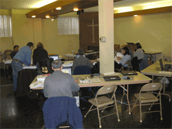
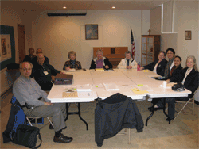

Serving taxpayers in Clark and Skamania Counties, including the Vancouver Metropolitan area (Vancouver, Camas, Battle Ground, Hazel Dell, and Salmon Creek) and Cowlitz and Wahkiakum Counties, including the Longview/Kelso area
What does it take to become an AARP TaxAide volunteer.
In most volunteer positions you receive a little instruction on the day you arrive at your volunteer post and then you do your thing with little or no supervision. Not so with TaxAide.
The process of becoming a TaxAide volunteer starts months in advance. In District One of the Washington state program we start recruiting for the next season as soon as we start preparing returns for the current season. It is a continuous cycle starting February 1 of the current year and going until February 1 of the next year.
Applications are submitted to our district all year and the screening process begins. New volunteers will be contacted and given instruction on how to use the IRS Link & Learn training available through the internet. This approach started in 2008 and is being improved rapidly to allow new volunteers to become successful. All volunteers new and old are required to pass a certification test before they can prepare taxes.
Other volunteers such as the Client Facilitators shown here also receive extensive training but since they do not prepare returns they do not need to pass any certification test.
Other positions in the program which require other talents include a District Coordinator, Local Coordinators, Technical Coordinator, Training Coordinator, Communications Coordinator and Administrative Coordinator.
If you are interested in volunteering please send e-mail to voltaxaide@comcast.net. Let us know how to contact you.
Copyright 2008-2009 AARP Tax-Aide SW Washington District 1 All rights reserved.